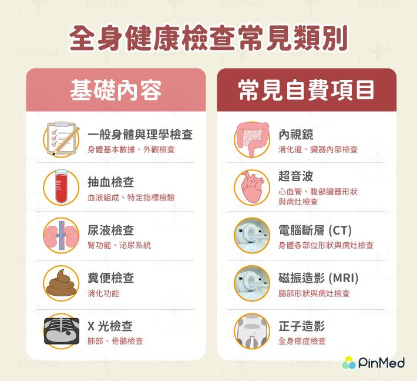
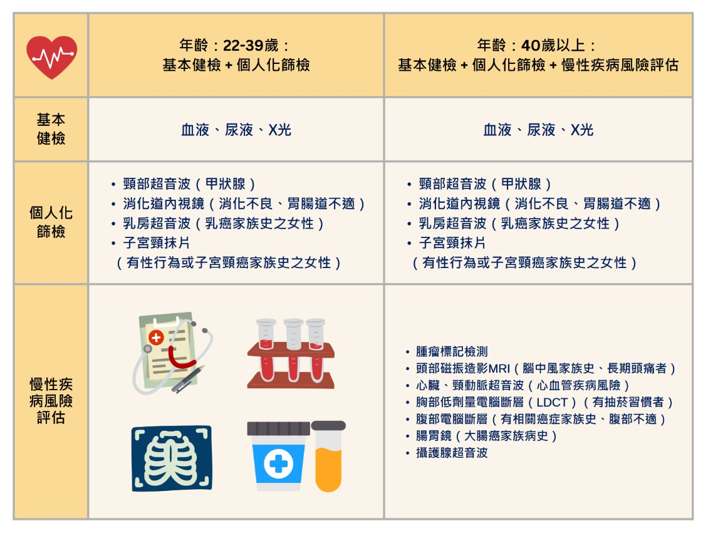
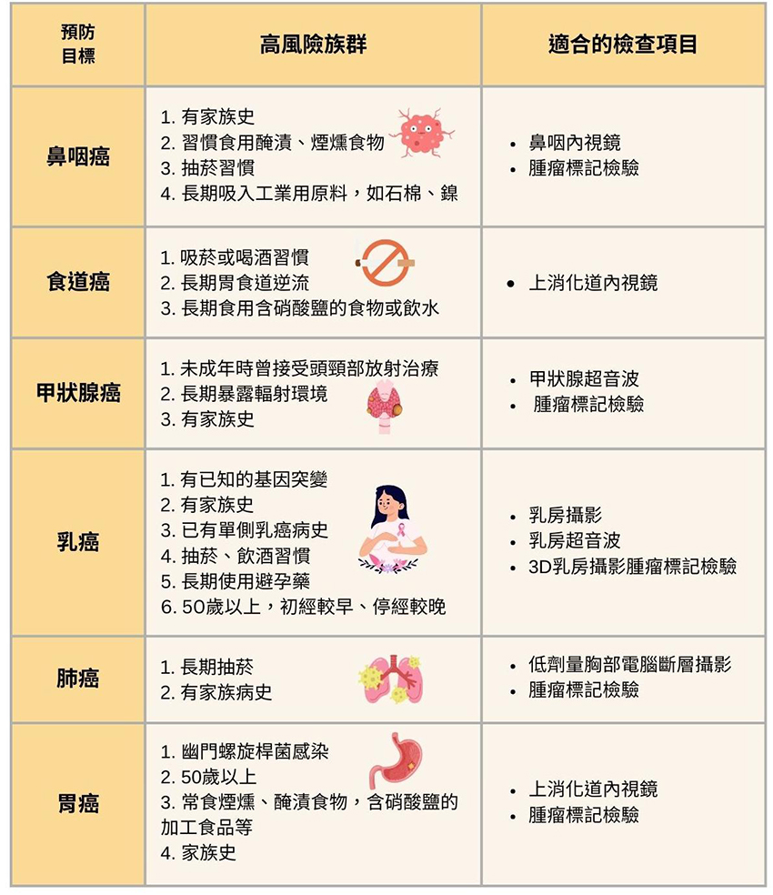
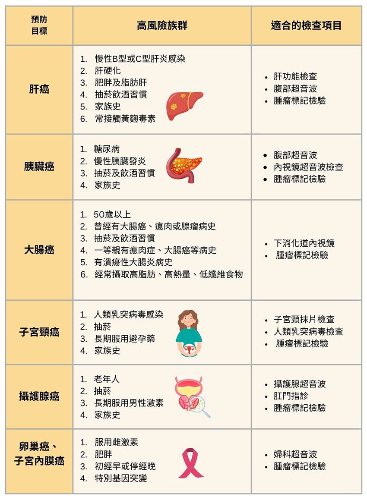
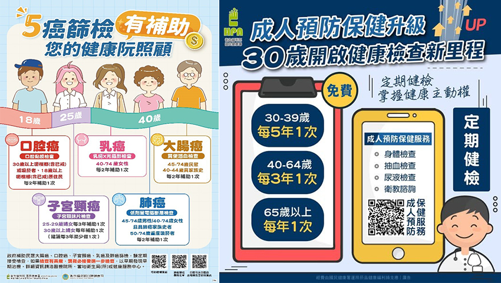

月號－健康大小事
月號－健康大小事健康檢查的選擇應依年齡、家族病史、生活習慣、環境及近期身體狀況來決定，並非做越多越好。透過定期健檢，可提早發現潛在健康問題，預防疾病發生或惡化。 |
| 如何選擇適合的健檢方案？ |
1.依照年齡與性別：考量不同年齡層常見疾病，及男女生發病率不同做選擇。 |
| 健康檢查項目有哪些？如何選擇適合的健檢方案？ |
健檢方式多元，主要可分為以下 8 大類： |
| 各年齡層健檢重點: |
|  |
|  |
| 癌症篩檢的健康檢查項目？ |
不同類型的癌症有對應的評估方式與篩檢，透過定期檢查，可及早發現癌前病變或早期癌症，提高治療成功率。以下是常見癌症的篩檢方式： |
|  |
|  |
| 政府五癌篩檢、成人預防保健補助: |
因應癌症與慢性疾病年輕化趨勢，國民健康署自114年起擴大癌症篩檢補助，包括肺癌、大腸癌、乳癌、子宮頸癌及HPV檢測，符合資格者可享免費定期篩檢，提早發現、及早治療。 |
此外，成人預防保健服務同步升級，篩檢年齡下調至30歲，擴大健康檢查內容，及早發現「三高」風險並提供健康生活衛教，降低慢性疾病發生。透過政府資源，讓更多民眾受惠，守護全民健康。 |
|  |
定期健康檢查不僅有助於早期發現潛在健康問題，還能降低嚴重疾病的風險，提升生活品質，是維持健康的重要習慣，建議依個人健康需求，適時搭配自費健康檢查，讓身體狀況獲得更完整的評估。 |
| 資料來源 1.成人預防保健升級 30歲開啟健康檢查新里程 2.健康檢查怎麼選？4 關鍵挑選適合方案、善用公費補助！ 3.40歲健康檢查項目怎麼選？只做免費的夠嗎？補助、推薦醫院詳解 4.癌症篩檢介紹(乳癌、子宮頸癌、大腸癌、口腔癌、肺癌) 5.第一次做健康檢查怎麼選？健康檢查項目百百種，教你如何挑選高 CP值健檢組合 6.健康檢查5大重點，健檢項目、費用、健檢中心推薦一次告訴你！ |